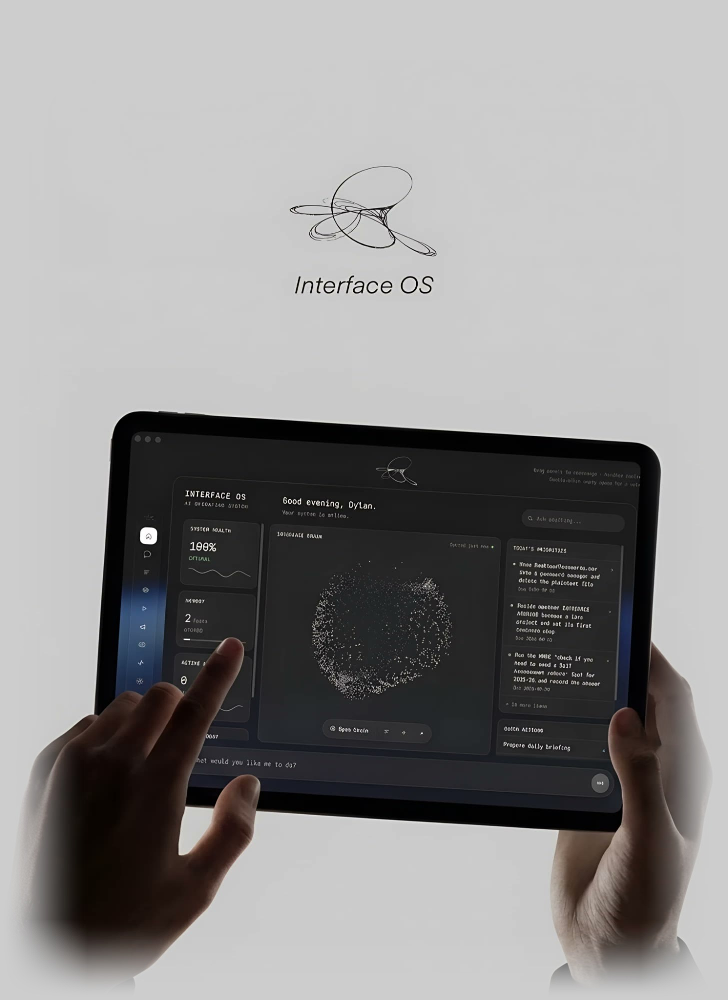

Digital infrastructure
Websites, ecommerce and digital systems for modern businesses.
We design and build digital experiences that help businesses attract customers, sell online and operate more efficiently.

What are you looking to build?
Choose the option that best fits your goals — or tell us what you're working on and we'll guide you.
More than just a website.
We build digital systems that help businesses attract customers, sell and operate more efficiently.
From idea to impact.
We keep the process simple. From strategy to launch and beyond, we work with you at every stage to build a system that evolves with your business.
Discover
We learn about your business and goals.
Design
We create a tailored strategy and design.
Build
We develop, integrate and test.
Launch
We go live and keep it running.
Selected work
Real projects.
Real digital systems.
We're putting together case studies from recent projects — check back soon, or tell us what you're building and we'll show you examples relevant to it.
Start a projectA better digital foundation.
Before
Traditional website
- Difficult to navigate
- Disconnected tools
- Manual processes
- Poor conversion journey
After
Modern digital system
- Clear customer journey
- Connected systems
- Automated workflows
- Built to evolve
More than a website.
A long-term partner.
We combine design, development and strategy to build digital infrastructure that evolves with your business.
DESIGN + DEVELOPMENT
One team from first concept to launch.
BUILT AROUND YOUR BUSINESS
No unnecessary templates — no forcing your business into someone else's system.
BEYOND THE WEBSITE
Websites, automation, integrations and digital systems.
DESIGNED TO EVOLVE
Your digital infrastructure should grow with your business.
Got questions?
It depends on scope — a focused website moves faster than a multi-system build. We'll give you a realistic timeline once we understand the project.
Yes — most clients keep working with us after launch, whether that's changes, new features or keeping systems running smoothly.
Usually, yes. We'll look at what you already use and connect to it or migrate away from it where that makes sense.
It depends on the project — tell us what you're building via the quote form and we'll come back with an approach and a budget range that fits.
Yes — we're based in Cardiff but work with businesses across the UK remotely.
Yes — Shopify is one of our core ecommerce platforms, alongside custom-built stores where that's the better fit.
Build something better.
Have a website that needs replacing? A business that needs a better digital system? Or an idea you don't know how to build yet?
Tell us what you're working on.